PIC"
width="162" height="162" />
PIC"
width="162" height="162" />
[Picture]" />
Definition If there is a constant C and a number k such that
We say that a function f is of order of a function g and write:
It is common to say this problem can be solved in O(f(n)).
Example of decision problem: Is it possible to draw this figure without going over the same
line?
[Picture]" />
[Picture]" />
[Picture]" />
[Picture]" />
Is it possible to have a walk around the city, crossing each of the seven bridges only once
?
PIC"
width="162" height="162" />
 PIC"
width="108" height="108" />
PIC"
width="108" height="108" />
By transforming our problem into a graph, our question amounts to asking whether there is an Eulerian path.
A connected graph has an Eulerian path ⇐⇒ the number of nodes with odd degree is 0 or 2.
May the number be 0 then the path is a cycle: it starts and finishes on the same node.
The theorem gives a certificate for the existence of an Eulerian path but doesn’t provide a
effective solution.
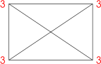[Picture]" />
 [Picture]" />
[Picture]" />
What is the shortest path from A to C ?
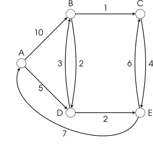[Picture]" />
Start by setting the distance from A to A to
zero in the node.
The color yellow indicates the final answer.
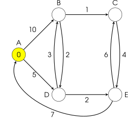[Picture]" />
For the node that was just made yellow,
check what you can reach by using its
outgoing arcs.
Finalize the smallest number that is not yellow
yet
 [Picture]" />
[Picture]" />
Check everything you can reach by using 1
arc from the node that was last made yellow.
Update numbers if you found a shorter path.
Finalize the smallest number that is not yet
yellow.
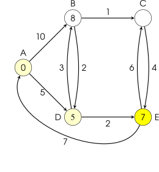[Picture]" />
Ignore arcs that point back to something that
was already finalized
Finalize the smallest number that is not yet
yellow
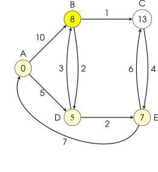[Picture]" />
Ignore arcs that point back to something that
was already finalized
Finalize the smallest number that is not yet
yellow
When the destination node is yellow, we are
done.
Note: in this case the destination was the last
node to become yellow, but this is not always
the case.
 [Picture]" />
[Picture]" />
A greedy algorithm extends its wealth (the solution being constructed) by taking the step with highest immediate gain.Greedy algorithms are often sub-optimal but they can be optimal.We will see that through Minimal Spanning Tree problem.
Problem: laying cables
 PIC"
width="162" height="162" />
PIC"
width="162" height="162" />
 PIC"
width="162" height="162" />
PIC"
width="162" height="162" />
Definition
A tree is a connected graph without cycles.
A spanning tree of a graph is a tree that contains all the vertices of the graph and a subset
of its edges.
A graph may have many spanning trees:
 PIC"
width="367" height="367" />
PIC"
width="367" height="367" />
Definition The Minimum Spanning Tree for a given graph is the Spanning Tree of minimum cost for that graph.
 PIC"
width="324" height="324" />
PIC"
width="324" height="324" />
We can imagine several versions of such a greedy algorithms and they may have different efficiencies.
This algorithm creates a forest of trees. Initially the forest consists of n single node trees (and no
edges). At each step, we add one edge (the cheapest one) so that it joins two trees together. If
it were to form a cycle, skip that edge (it would not be needed).
The steps are:
The forest is constructed with each node in a separate tree.
The edges are placed in a priority queue.
Until we’ve added n-1 edges,
Every step will have joined two trees in the forest together, so that at the end, there will only be one
tree.
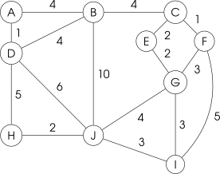[Picture]" />
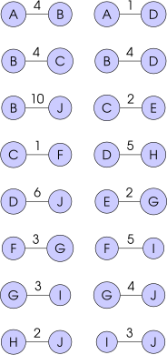[Picture]" />
[Picture]" />
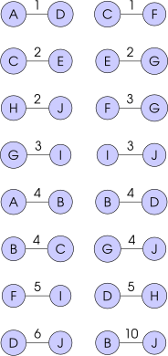[Picture]" />
[Picture]" />
 [Picture]" />
[Picture]" />
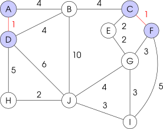[Picture]" />
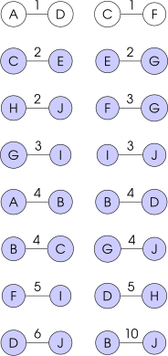[Picture]" />
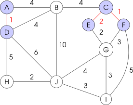[Picture]" />
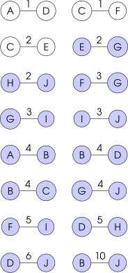[Picture]" />
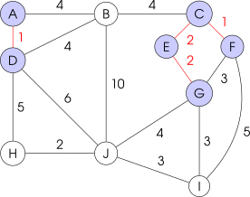[Picture]" />
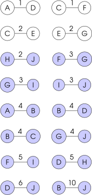[Picture]" />
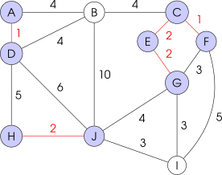[Picture]" />
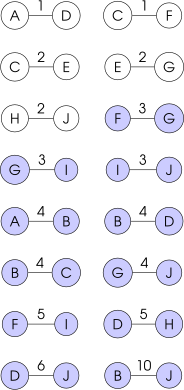[Picture]" />
[Picture]" />
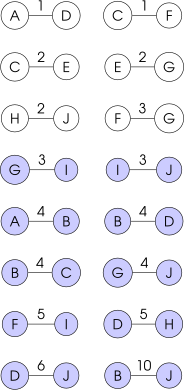[Picture]" />
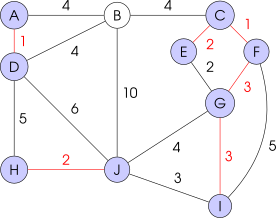[Picture]" />
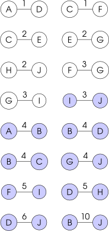[Picture]" />
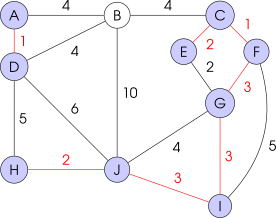[Picture]" />
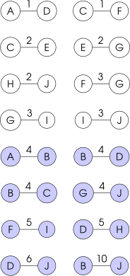[Picture]" />
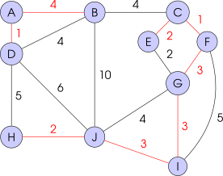[Picture]" />
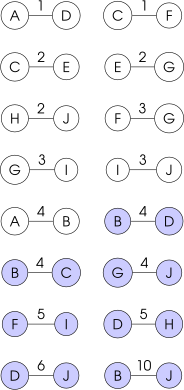[Picture]" />
 [Picture]" />
[Picture]" />
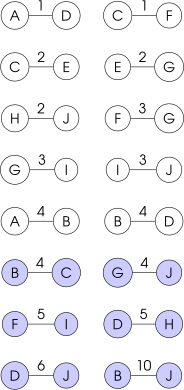[Picture]" />
 [Picture]" />
[Picture]" />
 [Picture]" />
[Picture]" />
The steps are:
Initialize new graph with one (arbitrary) node from the old graph.
While new graph has fewer than n nodes:
Every step will have joined one node, so that at the end we will have one graph with all n nodes and
it will be a minimum spanning tree of the original graph.
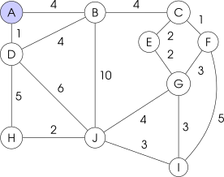[Picture]" />
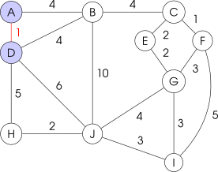[Picture]" />
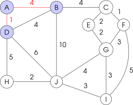[Picture]" />
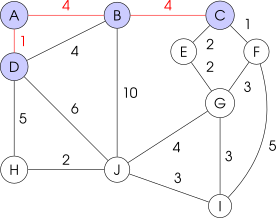[Picture]" />
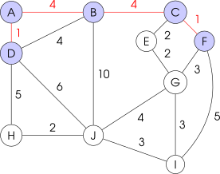[Picture]" />
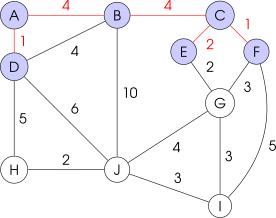[Picture]" />
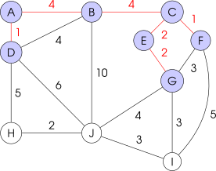[Picture]" />
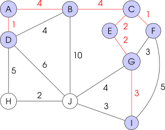[Picture]" />
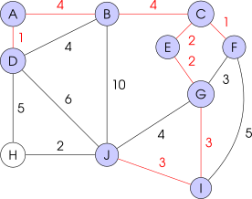[Picture]" />
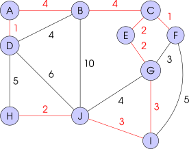[Picture]" />
Given a network directed from a source vertex to a target vertex with a maximum capacity on each arc, determine the highest value of a flow from the source to the target which respects the capacities and is preserved at each intermediate vertex.
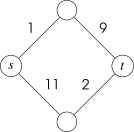[Picture]" />
the original arcs with capacity = original capacity - the flow on the arc.
This is called the residual capacity.
⇝if this value is zero, the arc is eliminated.
Arcs opposite to the original ones with capacity equal to the flow passing on the
corresponding arc
⇝if this value is zero, the arc is eliminated.
Try to find a path from source to target on the residual graph and update the flow with the
minimum capacity along the path (increase flow for original arcs, decrease for opposite
arcs).
Update the residual graph.
construct the re a path not exist, we’re done: the flow is maximal.
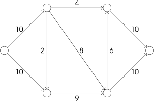[Picture]" />
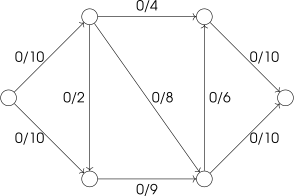[Picture]" />
Start with a flow of zero.
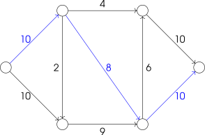[Picture]" />
Construct the residual graph as follow:
-Keep the same edges
-Capacity of edges is actual capacity - flow
-Backward arrow if we have flow
Select a path from s to t.
Therefore the residual capacity is 8.
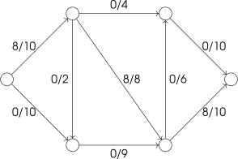[Picture]" />
Add the residual capacity to the flow.
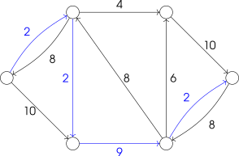[Picture]" />
Construct the residual graph and select a path.Therefore the residual capacity is 2.
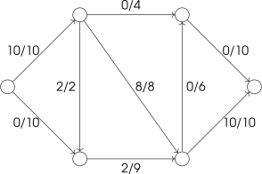[Picture]" />
Add the residual capacity to the flow.
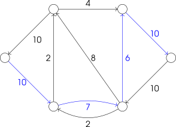[Picture]" />
Construct the residual graph and select a
path.
Therefore the residual capacity is 6.
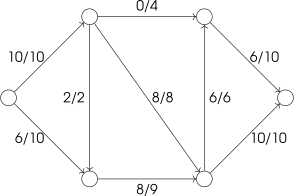[Picture]" />
Add the residual capacity to the flow.
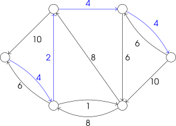[Picture]" />
Construct the residual graph and select a path. Therefore the residual capacity is 2.
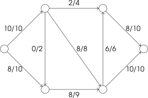[Picture]" />
Add the residual capacity to the flow.
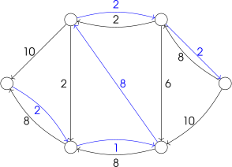[Picture]" />
Therefore the residual capacity is 1.
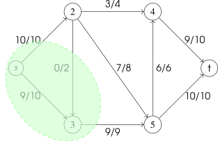[Picture]" />
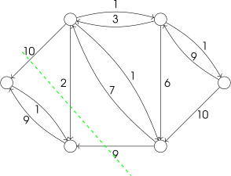[Picture]" />
Definition A cut corresponds to a set of edges (arcs) whose removal leaves a graph
disconnected.
Sometimes a cut is denoted by a partitioning of the nodes:
Example above: s,3 and 2,4,5,t.
An s-t cut is a division of the nodes into two parts, with the source in one part and the
target in the other.
The value of a cut is defined as the combined capacity of the outgoing arcs.
For instance, the green cut has a value/capacity of 10+9.
The minimum cutis among all cuts the one with the smallest value.
Proof. Clearly Min cut ≥Max flow since any flow that we push from s to t has to go through the green area.
Claim: when FF algorithm terminates, it gives a cut C and a flow F for which value(C) = value(F).
It follows min cut ≤ value(C) = value(F) ≤ max flow. __
Definition By Edmonds-Karp-Dinitz, Apply the FF algorithm but always choose the path with the minimum number of edges allows to terminate in O(mn).
Given the network with costs and capacities and a flow value v, we need to find an s-t flow of
value v of minimum cost.
Algorithm:
Add flow over the cycle.
Update the residual graph.
Definition A flow is a minimum cost flow (of given value v) ⇐⇒ Residual graph has no negative-cost cycles.
Example: Find a min cost flow of value 2.
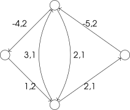[Picture]" />
V is a finite set of points
E is a set of pairs of two distinct points.
A graph is drawn by depicting the points in V as dots and the pairs in E as lines between two points.
Exercise 1.7 How many 2-regular graphs exist with 5 vertices?
Exercise 1.8 How many 3-regular graphs exist with 5 vertices?
Exercise 1.11 How many edges has a 5-regular graph on 16 vertices?
Exercise 1.12 How many edges has a k-regular graph on n vertices?
Exercise 1.16 Prove that every graph has an even number of points with odd degree.
Exercise 1.19 Prove that a graph G = (V,E) with |V| = n and |E| = m has a vertex with
degree ≤ and a vertex with degree ≥2m
-n" class="frac" align="middle" /> .
and a vertex with degree ≥2m
-n" class="frac" align="middle" /> .
Exercise 1.21 Prove that every graph G = (V,E) with |V|≥ 2 has two vertices of the same degree.
 PIC"
width="324" height="324" />
PIC"
width="324" height="324" />
 PIC"
width="108" height="108" />
PIC"
width="108" height="108" />
Informally, bipartite means that there are only arrows going across V1 and V2.
 PIC"
width="86" height="86" />
PIC"
width="86" height="86" />
The complete bipartite graph with |V1| = m and |V2| = n is denoted by Km,n
Exercise 1.26 For which values of m and n is Km,n regular?
Exercise 1.41 How many paths are there from vertex 1 to vertex 3 in K3?
Exercise 1.42 How many paths are there from vertex 1 to vertex n in Kn?
Exercise 1.43 Prove that that a graph of which each vertex has degree at least k, has a path of length k.
 PIC"
width="194" height="194" />
PIC"
width="194" height="194" />
This graph becomes disconnected when the dashed edge is removed.
Exercise 1.47 Prove that every connected graph on n vertices contains at leastn - 1 edges.
Exercise 1.48 Does there exist a non-connected graph on 6 vertices containing 11 edges?
Exercise 1.50 Prove that every non-connected graph on n vertices contains at most 1 2" class="frac" align="middle" />(n-1)(n-2) edges.
Exercise 1.59 Prove that if G1 = (V1,E1) and G2 = (V2,E2) are two distinct components of G then V1 ∩V2 = ∅.
Exercise 1.63 Prove that a graph G = (V,E) with each vertex having degree at least 1 2" class="frac" align="middle" />(n-1) is connected.
Exercise 1.67 Let G be a graph for which every vertex has a degree of at least 2. Prove that G contains a circuit.
 PIC"
width="108" height="108" />
PIC"
width="108" height="108" />
Exercise 1.75 Prove that between any pair of vertices in a tree there is exactly one path.
Exercise 1.76 Prove that every tree with at least two vertices contains a leaf.
Exercise 1.77 Derive from the previous exercise that every tree on n vertices has exactly n-1 edges.
Exercise 1.80 Prove that every tree with at least two vertices contains at least two leaves
Theorem Let G = (V,E) be a graph.
G is an Euler graph ⇐⇒ G is connected and each of its vertices has even degree.
Exercise 1.88 Let G be a connected graph with exactly two points of odd degree. Use Euler’s Theorem to prove that G contains a walk that traverses each edge exactly once.
 PIC"
width="172" height="172" />
PIC"
width="172" height="172" />
Exercise 1.90 Let n be an odd number. Show that on an n×n chess board, it is not possible for a knight (horse) to move over the board, hitting each square exactly once, while starting and ending in the same square.
Exercise 1.91 Show that for each n there exists a graph on n vertices such that each vertex has degree at least 12" class="frac" align="middle" />(n-1) and such that it is not a Hamilton graph.
 PIC"
width="324" height="324" />
PIC"
width="324" height="324" />
Edges cannot touch each other.
 PIC"
width="324" height="324" />
PIC"
width="324" height="324" />
Exercise X.1 Give an example of a connected graph with an even number of vertices that does not have a perfect matching.
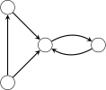[Picture]" />
Definition
The networks we consider consists of a directed graph G = (V,A), two special nodes s,t ∈ V which
are, respectively, a source and sink of G, and capacities ca > 0 on each arc a ∈ A. (Notation: we
also write cuv for a = (u,v).)
A flow f consists of a number fa ≥ 0 for each a ∈ A such that:
the capacity constraints are met: 0 ≤ fa ≤ ca for each a ∈ A,
flow conservation is met, that means, the amount of flow leaving a point u (other than the source or sink) is equal to the amount of flow entering u:
The value of the flow is the nett flow that leaves s:
To simplify notation, we define from now on fuv = 0 if (u,v)∕∈" class="notin" />A. Then we can write the value of the flow a
For a set U ⊂ V define:
δ-(U): the set of arcs with head in U and tail in V \U (arcs towards U )
δ+(U): the set of arcs with tail in U and head in V \U (arcs leaving U )
If U ⊂ V with s ∈ U and t ∈ V U then δ+(U) is called an s-t cut. We call this the cut defined
by U .
The next theorem says that the value of the flowis equal to the nett flow across any s-t cut.
Theorem Let f be a flow and δ+(U) an s-t cut then
Equivalently, when we define fuv = 0 if (u,v)∕∈" class="notin" />A, then we can write this theorem as
Definition The capacity of a cut δ+(U) is the total capacity of the arcs in the cut:
To simplify notation we write cap(δ+(U)) as cap(U) and define cuv = 0 if (u,v)∕∈" class="notin" />A. Then we can write the capacity of the cut defined by U as

The theorm implies that the maximum value of a flow is no more than the minimum capacity of a cut. In fact, equality holds and the proof follows from the algorithm to find a maximum flow
Definition The algorithm starts with zero flow: fe = 0 for all e ∈ A. Then, it repeatedly chooses an
appropriate path from s to t and increases the flow along the arcs of this path as much as
possible.
It is important to note that it may be necessary to reduce flow along an arc in order to increase
the flow over the path. In the example below, the first number is the flow and the second number
is the capacity. The maximum flow is 2. However, the initial flow f1 of value 1 as shown in
the figure cannot be extended without reducing the flow on the arc in the middle.
[Picture]" />
Given a flow f, the residual graph (or residual network) gives for any arc the amount by which the current flow on the arc can be altered. For any arc (u,v) ∈ A, there is an arc (u, v) in the residual graph if there is still capacity left: fuv < cuv. But also, there is a reversed arc (v, u) in the residual graph if fuv > 0. The residual graph for our example is as follows. The numbers show the amount by which the current flow can be extended, or, if the arc is reversed, the amount by which the current flow can be reduced. The graph has an st-path, namely s,1,4,3,2,t. The minimum capacity on the path is 1. So we add 1 over this path. The new flow has value 2 which is the maximum. A more complex example of the FF algorithm is given in the slides.
[Picture]" />
[Picture]" />
Theorem If all capacities are integer then the FF algorithm terminates and the flow fa is integer for each arc a ∈ A.
Theorem The maximum value of an s-t flow is equal to the minimum capacity of s-t cut and FF-algorithm returns both a maximum flow and a minimum cut.
The algorithm applies the FF algorithm but in each iteartion it chooses the s-t path in the residual graph with the minimum number of arcs.
Definition In the minimum cost flow problem we are given a network G = (V,A) with s,t ∈ V and a capacity ca for any arcs a and, in addition, a cost that we denote by costa. The cost of a flow f is:
By this definition, the minimum cost (zero) is attained by sending no flow. In the minimum cost flow
problem we want to find, for a given flow value v, a flow of minimum cost among the flows of
value v.
A mincost flow can be computed as follows:
First, find any flow f of value v, which can be computed by, for example, the FF algorithm.
Next, make the residual network as in FF but now for each reversed arc also make the cost
negative. (Note that sending a flow over a reversed arc in the residual corresponds with reducing
the flow.) Let C be a cycle in the residual graph. If we augment f by sending flow over C then the
value of the flow remains v. However the cost may change: If the sum of the cost of the arcs in C
is negative then the cost of the flow will decrease.
Mincost flow algorithm: (The cycle cancelling algorithm):
Step 1: Find a feasible flow of value v. Make the residual graph.
Step 2: While there is a negative-cost cycle C in the residual graph:
add the largest possible flow over C,
update the residual graph.
Exercise 1 Consider the following problem: There are p families going out for dinner and together they use q tables. No two members of a family should sit at the same table. Family i has ai people (i = 1,2,…,p) and table j has bj chairs (j = 1,…,q). Formulate this problem as a maximum flow problem. (Make a sketch of the network including the capacities on the arcs.)
Exercise 2 Explain how you can find a maximum matching in a bipartite graph by using a maxflow algorithm. That means, formulate the matching problem as a flow problem and explain how you can deduce the maximum matching from the maximum flow.
Exercise 3 In the network below, each first number is the arc’s capacity and the second number is its cost per unit flow. Find a minimum cost flow of value 3 by following the steps of the cycle cancelling algorithm. Start with a flow of value 3 over the path s, a, t.
[Picture]" />
[Picture]" />
Exercise 4 Consider a flow network with integer capacities. Prove or disprove the
following statements.
(a) If all capacities are even, then there is maximum flow in which fa is even for all a ∈ A.
(b) If all capacities are odd, then there is maximum flow in which fa is odd for all a ∈ A.
Exercise A Draw a small graph for which Dijkstra’s algorithm does not give the shortest path from node A to node B.
Exercise B Fill in the blanks.
 PIC"
width="216" height="216" />
PIC"
width="216" height="216" />
The value of the initial flow f0 is:
The cost of the initial flow is:
The ressiual network has a negative cost cycle.This is cycle:
Assume we add the maximum possible amount of flow overthis cycle to the initial flow f0. Then he
cost of the flow decreases by
Theorem 1 The sum of all the degrees of all the vertices of an graph is equal to twice its number of edges:
Proof. We can count the number of edge ends in two different ways:
it is the double of the number of edges since each edge having two ends
it is also the sum of the degrees of each vertex
. __
This theorem leads to the handshake lemma:
The number of odd-degree vertices is even.
Solution 1.7 One graph which is a cycle on all the 5 points denoted by C5:
[Picture]" />
Solution 1.8 Each node of 3-regular graph has degree 3 so odd. If there is 5 vertices then the number of odd-degre vertices is odd which is absurd according to the handshake lemma. Therefore, none.
Solution 1.11 Using the Theorem 1, we have:
Solution 1.12 Using the Theorem 1, we have:
Solution 1.16 To prove the handshaking lemma, we’ll use the Theorem 1:
even + even = even = ⇒" class="Longrightarrow" />( )
∑ d(v)
d(v)even" class="left" align="middle" /> is an even number.
even + odd = odd but 2m is always even. Therefore ( )
∑ d(v)
d(v)even" class="left" align="middle" /> has to be even.
Solution 1.19 Using the Theorem 1, we have:
We proved that on average a vertex is of degree 2m- n" class="frac" align="middle" />.Hence, there must be a vertex less than 2m n" class="frac" align="middle" /> and a vertex of degree above 2m- n" class="frac" align="middle" />.
Solution 1.21 Assume all vertices has a different degree.
There is n degrees different therefore ∀v ∈ V, d(v) ∈{0,…,n-1}.
However, there cannot be two vertices u, v with d(u) = 0 and d(v) = n-1.
So, there are at most n-1 different degrees.
Since we have more vertices than different degrees, by the Dirichlet’s principle there must
be at least two vertices that have the same degree.
Solution 1.26 Only regular if m = n.
Solution 1.41 There are 2 paths: (1,3) and (1,2,3)
[Picture]" />
Solution 1.42 Given a starting node and a final node in Kn, how many paths there is of size ?
Let’s work on examples to find a logic:
[Picture]" />
path of size 1: 1
path of size 2: 2
[Picture]" />
path of size 1: 1
path of size 2: 2
path of size 3: 2
[Picture]" />
path of size 1: 1
path of size 2: 5-2 = 3
path of size 3: (5-2)(5-3)=6
path of size 4: (5-2)(5-3)(5-4) = 6
path of size 1: 1
..
. " class="vdots" />
path of size i: (n-2)⋅⋅⋅" class="@cdots" />(n-i)

path of size n-1: (n-2)⋅⋅⋅" class="@cdots" />1
To find the total number of paths, you would have to add all these numbers:
Solution 1.43 Construct a path as follow:
Step 1: Take any vertex and call it v0. We build the path (v0)
Step 2: Define i to be the index of the last vertex of our path.
Step 3: We add vi+1 to the path where vi+1 is in the neighborhood of vi and vi+1∕∈" class="notin" />{v0,…,vi}
Step 4: Repeat 2 & 3 while i ≤ k
The existence of vi+1 is guaranteed since vi has at least k neighbors and i < k.When i = k,
we have the path (v0,…,vk)
Solution 1.47 By induction on n, we will prove
Base case: for n = 1, we have 0 edges. Hence P(1) is true.
Induction hypothesis: Assume P(n) is true: every connected graph with n vertices has at
least n-1 edges.
Induction step: Let G = (V,E) be a connected graph with n+1 vertices: v1,…,vn+1.
Define G′ = (V \{vl},E \{vl,vi}) with 1 ≤ i ≤ n + 1 and vl any vertice of G such that d(vk) =
min{d(v) | v ∈ E}. G has n vertices and G is connected.
By our induction hypothesis, it follows that G’ has n-1 edges. Moreover G is a connected
graph therefore there is at least 1 edge between vl and another vertice.Therefore G has
at least n-1+1 = n edges: P(n+1) is true.
Hence by mathematical induction P(n) is correct for all positive integers n.
Solution 1.48 No since a non-connected graph on 6 vertices contains at most 10 edges.
Solution 1.50 Let G = (V,E) be a non-connected graph on n vertices.
Define G1 = (V1,E1) and G2 = (V2,E2) with:
In other words, there is no edge linking a vertice of V1 to a vertice of V2.
Let |V1| = k. Therefore |V2| = |V \V1| = n-k.
Solution 1.59 Let G1 = (V1,E1) and G2 = (V2,E2) are two distinct components of G.
G1 is a maximal connected subgraph so there is no other connected subgraph G′ = (V′,E′)
with V1 ⊆ V′ and E1 ⊆ E′.
In particular G2 is a (maximal) connected subgraph thus V1 ⁄⊆ V2 and E1 ⁄⊆ E2.
G2 is a maximal connected subgraph so there is no other connected subgraph G′ = (V′,E′)
with V2 ⊆ V′ and E2 ⊆ E′.
In particular G1 is a (maximal) connected subgraph thus V2 ⁄⊆ V1 and E2 ⁄⊆ E1.
Solution 1.63 Let G = (E,V ) be a graph with ∀v ∈ V, d(v) ≥n-1-
2" class="frac" align="middle" />.
Assume it’s not connected. G can be partitioned into 2,3,.., n components.
Let C be a component of G therefore it’s a (maximal) connected subgraph.
If we split into 2 components, |C| = n
2" class="frac" align="middle" />.
If we split into 3 components, |C| = n
3" class="frac" align="middle" />. (and so on until n)
The best case scenario is into 2 components therefore C has at most n
2" class="frac" align="middle" /> vertices.
However, all vertices of C can have at most n
2" class="frac" align="middle" /> -1 edges. But n
2" class="frac" align="middle" /> -1 < n
2" class="frac" align="middle" /> -1
2" class="frac" align="middle" /> = n-1
2" class="frac" align="middle" />.
Since all vertices of G had to be greater or equal n-1
2" class="frac" align="middle" />, it’s absurd to have at most our
vertices in C of degree n
2" class="frac" align="middle" /> -1. Therefore G is connected.
Solution 1.67 Let G = (V,E) be a graph where ∀v ∈ V, d(v) ≥ 2.
Step 1: Start anywhere by coloring a vertex.
Step 2: Take any usued edges and color the vertex.
Step 3: Repeat step 2 until return to a vertex.
We’ll be able to continue in the worst case until we have covered all the vertices once.
Since each vertex has degree at least 2, so there will be an unused edge to exit on. If you
ever return to a vertex where you’ve been, you’ve got a cycle.
Solution 1.75 Assume that between any pair of vertices in a tree there is 2 path: p1 =
(vk,...,vl) and p2 = (vk,...,vl)
Therefore, by merging p1 and the reversed path p2 without its first vertice, we got a circle.
That’s absurd. Therefore in any pair of vertices in a tree there is exaclty one path.
Solution 1.76 Let G be a tree without leaf. Therefore all vertices are of degree 2. By the
exercise 1.67, G must contains a circuit.Absurd since G is a (connected) forest.
Thus G always has a leaf.
Solution 1.77 By induction, we will prove:
P(n):" Every tree on n vertices has exactly n-1 edges".
Base case: for n = 1, we have 0 edges. Hence P(1) is true.
Induction hypothesis: Assume P(n) is true: every tree on n vertices has exactly n-1 edges.
Induction step: Let G = (V,E) be a tree with n+1 vertices.By the exercise 1.76 there must be a
leaf somewhere in G, remove it. By our induction hypothesis, the new graph has n-1
edges, if we put back our leaf it’s clear that G has n-1+1 = n edges. Therefore P(n+1) is
true.
Hence by mathematical induction P(n) is correct for all positive integers n.
Solution 1.80 By the Theorem 1,
Therefore the average degree of a vertice in a tree is 2n-n2-" class="frac" align="middle" />.
Assume there is only one leaf in a tree.Then all other vertices should be of at least degree
2. (not 0 since a tree is a connected forest)
Therefore the minimum average of a tree is:
However
Our average is too big given our assumption therefore there must be more than 1 leaf.
Solution 1.88 Let G be a connected graph with exactly two vertices of odd degree.
Add one linking edge between those two vertices of odd degree.Now all vertices have
an even degree.
Therefore, by the Euler Theorem there is an Euler cycle.
By deleting the linking edge, the Euler cycle became an Euler path.
Solution 1.90 Let n be an odd number. We want to show that on an n×n chess board,it is
not possible for a knight (horse) to move over the board, hitting each square exactly once,
while starting and ending in the same square.
A knight moves from white to black and vice versa. Since n is odd, n2 is odd. If it starts on
black, then it is on white after n 2 moves. But then it cannot be back at its starting point.
Solution 1.91 We want to prove the existence of a graph G with n vertices with ∀v ∈
V,d(v) ≥n
2" class="frac" align="middle" /> -1 such that there is no Hamilton Circuit.
If n is even then take two components with n/2 vertices of degree n
2" class="frac" align="middle" /> -1.
If n is odd then take two complete graphs on n∕2 vertices and merge two vertices to have
only one.All vertices will be of degree n
2" class="frac" align="middle" /> -1 except the merged vertex that will have n-2
Solution X.1
[Picture]" />
Solution 1 Take vertices (v1,v2,…,vp) where vi corresponds with family i.
For each table j, take a vertex wj . Further add points s and t.
There is an arc (s,vi) with capacity ai for each i ∈{1,…,p}.
There is an arc (wj,t) with capacity bj for each j ∈{1,…,q}.
For each pair (i, j), there is an arc (vi,wj) with capacity 1.
An upper bound on the maximum flow vale is ∑iai since that is the maximum flow that can
leave s. If there exists a flow of value ∑iai then this immediately give a solution to the dinner
problem since, by Theorem 3, the flow on each arc (vi,wj) is either 0 or 1. If the flow value
on (vi,wj) is one then a person from family i is seated at table j.
Solution 2
 PIC"
width="216" height="216" />
PIC"
width="216" height="216" />
Solution 3
[Picture]" />
Cost: 3⋅4+3⋅4 = 24
[Picture]" />
Residual graph
Look for a negative circle: -4+2+3-4 = -3 and
the residual capacity is 2.
[Picture]" />
Cost: 24-2⋅3 = 18
[Picture]" />
Residual graph
Look for a negative circle: -4-4+2+1+3 = -2
and the residual capacity is 1.
[Picture]" />
Cost: 18-2 = 16
[Picture]" />
Residual graph
No negative circle hence 16 is the minimal cost
flow.
Solution 4 (a) True. Divide all capacities by 2. Theorem 3 says that there is an optimalflow
with integer flow values fa on each arc. Now multiply all fa by two.
(b) Not true. This is a counter example where All edges have odd capacity, but the
maxflow is even.
Solution A
[Picture]" />
Solution B
The value of the initial flow f0 is:2+2
The cost of the initial flow is:16+6 = 22
The ressiual network has a negative cost cycle.This is cycle:abct
Assume we add the maximumpossible amount of flow overthis cycle to the initial flow f0.
Then he cost of the flow decreases by 6.